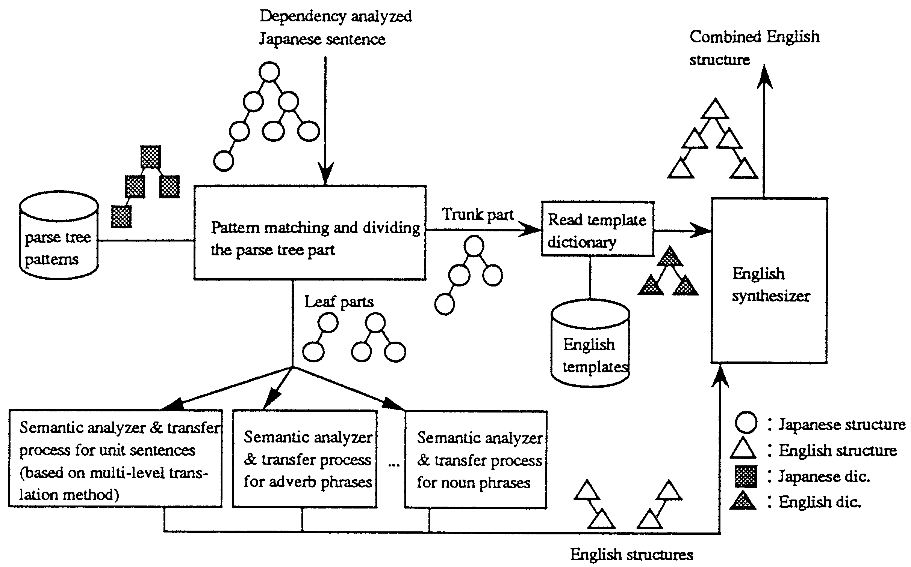
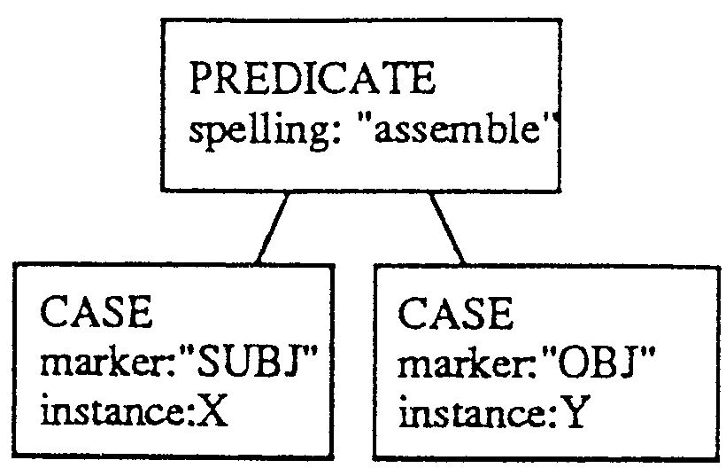

This paper proposes a cooperative translation method that combines direct parse tree translation with the transfer method implemented in the Japanese-to-English machine translation system ALT-J/E. Direct parse tree translation uses pattern matching between a dependency analyzed Japanese input sentence and parse tree patterns in a parse tree dictionary. Ordinary transfer methods have a problem in that input sentences are split up too finely, utilizing this pattern matching prior to the split process helps eliminate unnecessary splits. It is shown that the nodes in the patterns should be treated as three different types in order to translate the variable parts in the pattern by the transfer method.
Direct parse tree translation, Hybrid approach.
| Introduction | |
| Translation system overview | |
| Matching and Division process | |
| Combining the 'trunk' and the 'leaves' | |
| How to treat free elements | |
| Applicability | |
| Conclusion | |
| Acknowledgments | |
| References |
Up till now, most machine translation systems have been based on the transfer method, where translation is conducted in several phases such as morphological analysis, syntactic analysis, semantic analysis, transfer, and generation. The semantic analysis and transfer phases mainly process words while the generation process combines the translations. Although phrase transfer rules using syntactic information have also been used, such rules, which are described without strictly defined semantic attributes, sometimes causes unexpected side effects. When the sentence is divided into the smaller units that are required by the semantic analyzer, if there is excessive division the meaning of the input sentences can be changed.
Recently, example-based (Nagao, 1992; Furuse and Iida, 1992) , knowledge-based (Tsujii and Ananiadou, 1993; Nirenburg and Levin, 1991) and pattern-based (Katoh and Uratani, 1992; Maruyama, 1993) translation systems have been proposed to replace the transfer method. Since these methods translate without excessive division, the meaning in the input sentence structure is conserved. However, there are problems with all these methods. The example-based method can not readily calculate the similarity between input sentences and the exarnpIes also translation fails Without sufficiently similar exampIls. It is not clear how to use and build a knowledge-base for knowledge-based translation. Pattern-based translation with morpheme patterns cannot be applted to free word order languages.
In order to conserve the meaning of an input sentence, translation units that cannot be divided prior to semantic analysis needed to be appropriately defined. The Japanese to EngliSh translation system ALT-J /E, based on the multi-level translation method (Ikehara, 1989), was developed to reduce unexpected division. This method employs three levels of abstraction for translating unit sentences1, and each level has its own transfer rules2. The least abstract rules are applied first. Other expressions such as noun phrases or adverbial phrases are translated based on a semantic analysis.
Since the three levels of rules for unit sentences require units which contain one verb and some case elements and the semantic analyzers for noun or adverbial phrases require appropriate structures, the muIti-level transIation method must divide input sentences into several unitsThis makes it difficult to handle Japanese verbs with wide ranging meanings such as naru or suru which are used frequently (similar to "do" or "make" ) and English special expressions such as subjunctives, because the information needed for translation is often scattered between the units, In order to handle such scattered information, we have introduced direct parse tree translation into ALT-J/E. The direct parse tree translation uses pattern matching between the parse tree of an input sentence and parse trees in a dictionary. Since this is processed prior to the division process, information from the entire parse tree can be utilized.
It is possible to build a translation system using only this method, but such a system would have the following disadvantages.
Semantic analysis-based translation does not have these disadvantages. In order to integrate the two methods, direct parse tree translation is mainly used to handle long range dependency on the parse tree, which is difficult to treat With ordinary semantic analysis. This paper proposes a method of cooperative translation using both direct parse tree translation and the transfer method implemented in the Japanese-to-English machine translation system, ALT-J/E.
Direct parse tree translation should capture the Japanese structure corresponding to an English expression. It is difficult to find a pattern of morpheme sequences because Japanese has almost no word order dependency. Therefore, we introduce a pattern matching function on the dependency structure of the input sentences.
Figure 1 shows an overview of the translation system. The whole system is made up of a pattern matching part, some semantic analysis-based translators and an English synthesizer. A white circle represents a Japanese phrase and a tree made up of white circles represents a dependency analyzed Japanese sentence; A hatched square represents a rule that a Japanese phrase should satisfy and a tree made up of hatched squares represents a parse tree pattern. A white triangle represents a English word and a tree of these triangles reprcsents a structure of English sentence. A tree made up of hatched triangles represents a English template as described in the English template dictionary.
|
 |
The pattern matching part receives a dependency analyzed Japanese sentence and compares it with the Japanese parse tree patterns described in the Japanese parse tree dictionary. If the pattern matches the input tree, the tree is divided into a 'trunk part' and some 'leaf parts'. The trunk part is the part that is translated as a whole, and the leaf parts are the rest of the input tree which will be translated by the semantic analysis-based translation. For the trunk part, since the scattered information is already captured, no further deep analysis is required. The system merely uses the English template which corresponds to the pattern from the Japanese parse tree dictionary. For each leaf part, the system invokes the relevant semantic analyzer and transfer process needed to generate the English structures. The English synthesizer receives the English template read from the English template dictionary and the English structures generated by the transfer process, and combines them into a complete English sentence,
The pattern matching part compares the dependency analyzed Japanese sentence with parse tree patterns. The dependency structures are represented as trees which contain words and phrases on their nodes. Therefore the parse tree patterns are made of trees with attribute conditions on their nodes. The entire comparison examines all conditions in each node in the parse tree pattern and the attributes of each node in the input sentence.
The result of the pattern matching is that each node of each parse tree pattern has a part of an input tree as its value. The division process separates node values into leaf and trunk parts, but there may be more than one possible separation. Sentence (1) shows the exanlple of a subjunctive expression; which cannot be represented by a more simple Japanese form.
| (1-a) | kare-ha | marude | nan-demo | shitte-iru-ka-no-youni | hanasu. | ||
| he | almost | everything | know | talk | |||
| (1-b) | he talks as if he knew everything. | ||||||
In this case, the key expressions that determine that this sentence is the subjunctive are the Japanese adverb marude and the compound made of an auxiliary verb youni and particles kano. The Japanese sentence is parsed into the dependency structure shown in Figure 2-(a), To capture this structure, the parse tree pattern of Figure 2-(b) can be prepared in the parse tree dictionary.
|
The pattern matching part supplies the result that X directly corresponds to kare, that Y directly corresponds to shitteiru and that Z directly corresponds to marude. To generate the phrase "know everything" , Y should be nandemo shitteiru. Thus, the additional element nandemo should be connected to variable Y. Z and W, however, are parts of the trunk and are not translated using the transfer rules.
Another example, sentence (2) , may be informative.
| (2-a) | kare-ha | isu-no | ashi-wo | kumu | ||
| he | chair | leg | combine | |||
| (2-b) | He assembles chair legs. | |||||
| (2-c) | * | He crosses chair legs. | ||||
In this case, to correctly translate kumu as "assemble" requires that ashi does not refer to a part of an animal3. Thus the parse tree pattern in Figure 3-(b) should be prepared in the parse tree dictionary.
|
The result from the pattern matching part is that X directly corresponds to kan; that Y directly corresponds to ashi, that Z directly corresponds to isu and that W directly corresponds to kumu. Since the input to generate the phrase "chair leg" in node Y is that Y is isu-no ashi, Z needs to be connected to variable Y.
These examples show that the Z in the pattern for sentence (2) should be treated differently from the Z in the pattern for sentence (1).
To do this, we introduce three types of node in the parse tree pattern.
| a-type This is the root of a leaf part. This node should be translated into English. | |
| b-type This is a part of the trunk part. This node should not be translated into English, but is translated directly as a part of the template. | |
| c-type This is a part of a leaf part, but not the root. This node should be connected to an upper node. |
For a-type nodes, the system invokes the relevant semantic analyzer which is described in the parse tree pattern (Figure 4,5). B-type nodes are discarded. For all other elements in the input sentence (those that directly correspond to c-type nodes and any additional elements), the following sequence is performed.
|
|
In the case of sentence (1), the nodes should be categorized as follows: X and Y are a-type and Z and W are b-type. X and Y are translated by semantic analysis-based translator, and Z and W are discarded. The sequence shown above is performed for one additional node nan in the example sentence. Following the tree will stop at the node shitteiru, which directly corresponds to a-type node Y. Therefore, the node nan is connected to shitteiru and the system determines that X consists of kare and Y consists of nandemo-shitteiru (see Figure 4).
In the case of sentence (2), the nodes should be categorized as follows: X and Y are a-type, Z is c-type and W is b-type. The node isu which corresponds to c-type node Z is treated by the above sequence and connected to ashi. The system determines that X consists of kare and Y consists of isu-no-ashi (see Figure 5).
The English template dictionary contains the templates of English structures corresponding to the trunk parts. The template has one variable for each a-type node. The role of each variable such as SUBJ in SENTENCE or MODIFIER in NP is also described in the template. The part determined as the value of an a-type node is analyzed semantically by the relevant analyzer and is transferred by the relevant transfer process. Each result of the transfer process is connected to the template according to the role of the variable in order to build a complete English sentence. Figure 6 shows the English template used with the example pattern in figure 5.
 |
The pattern matching part sometimes produces free elements. They need to be correctly translated into English using the semantic analyzer and the transfer process, and the result of the transfer process should be properly connected to the English structure. Our current system can treat free elements if the following two conditions apply.
When both these conditions are satisfied, the free element is translated as an adverbial phrase or a prepositional phrase connected to the predicate. Otherwise, the direct parse tree translation fails and the whole sentence is translated normally using semantic analysis.
For example, sentence (3) has the free element isoide "in a hurry". Because isoide is an adverbial phrase and there is a predicate in the sentence, the translation of isoide can be connected to the predicate. This gives sentence (3-b).
| (3-a) | kare-ha | isu-no | ashi-wo | isoide | kunda | ||
| he | chair | leg | hurry | combined | |||
| (3-b) | He assembled chair legs in a hurry. | ||||||
We examined the translation of naru in a functional test set (Ikehara, 1992) of about 3,700 sentences. Although ALT-J/E translates the verb naru with many valence patterns, it is difficult to translate. One of the reasons is that naru is sometimes translated into a phrase without a verb. The solution is to capture the structure around naru with an upper structure including another verb or to use a mechanism to convert a clause into a phrase. Both are impossible with simple valence patterns for unit sentences which cannot refer to external information. Another reason is that information distant from the verb is required to select the English structure. For example, to translate ’¡Ásuru jidai-ni naru into "the age will come when ’¡Á", ’¡Ásuru should be treated together with naru4. But the division process in the transfer method would send ’¡Ásuru jidai to the noun phrase analyzer on its own.
The test set has 146 sentences which include naru, of which about 60 sentences can be translated into acceptable English by ALT-J/E without direct parse tree translation. We have obtained key expressions to capture the structure around naru for about 40 more sentences, rules using these are currently being refined and implemented.
We have combined direct parse tree translation with translation based on semantic analysis. This method has been implemented on the Japanese-to-English machine translation system ALT-J/E. This method is especially effective for translating Japanese native verbs such as naru or suru which are difficult to translate with valence patterns.
The authors wish to thank the other members of the MT research group for several valuable discussions. They also wish to thank Miki Nakamura, Tomiko Hyoudou and Hiroko Inoue for their suggestions and valuable discussions.